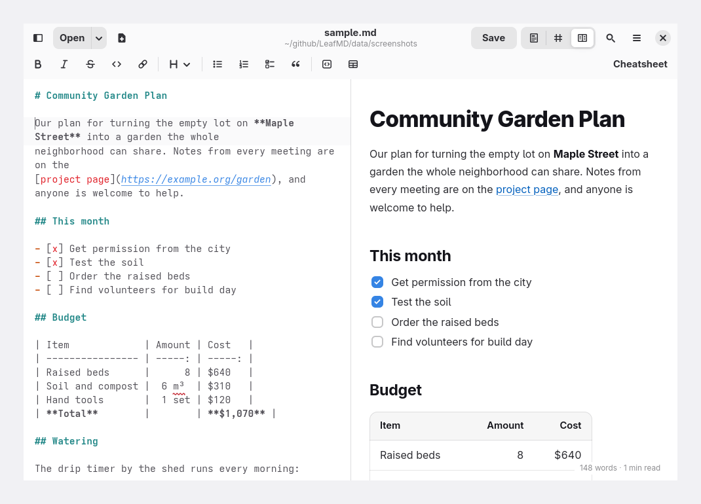
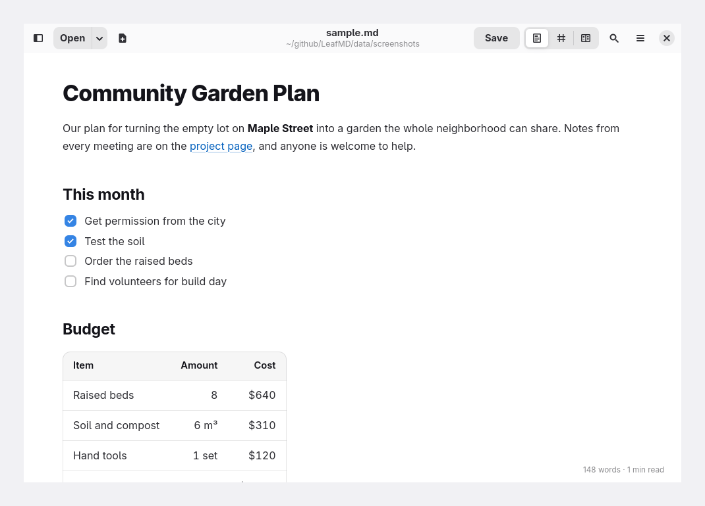
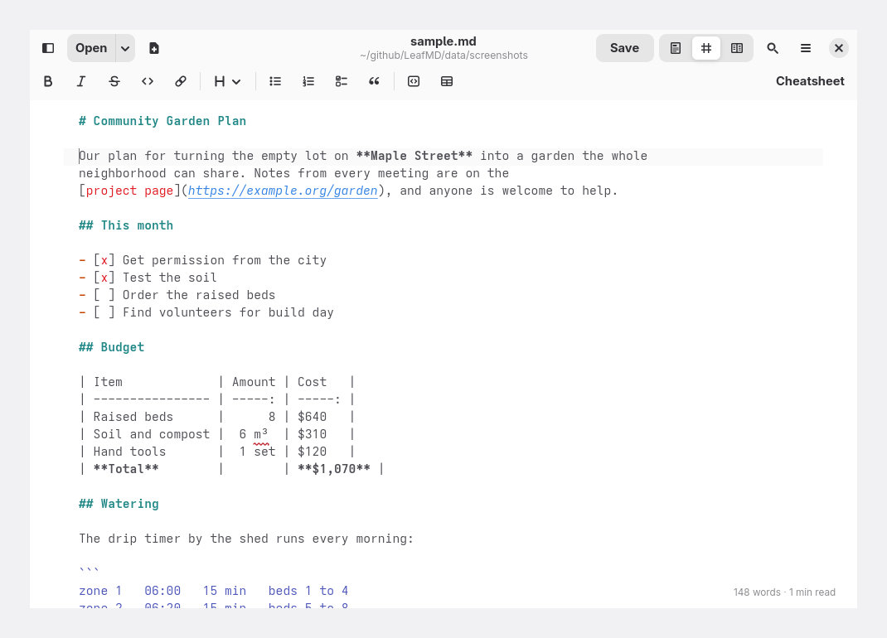
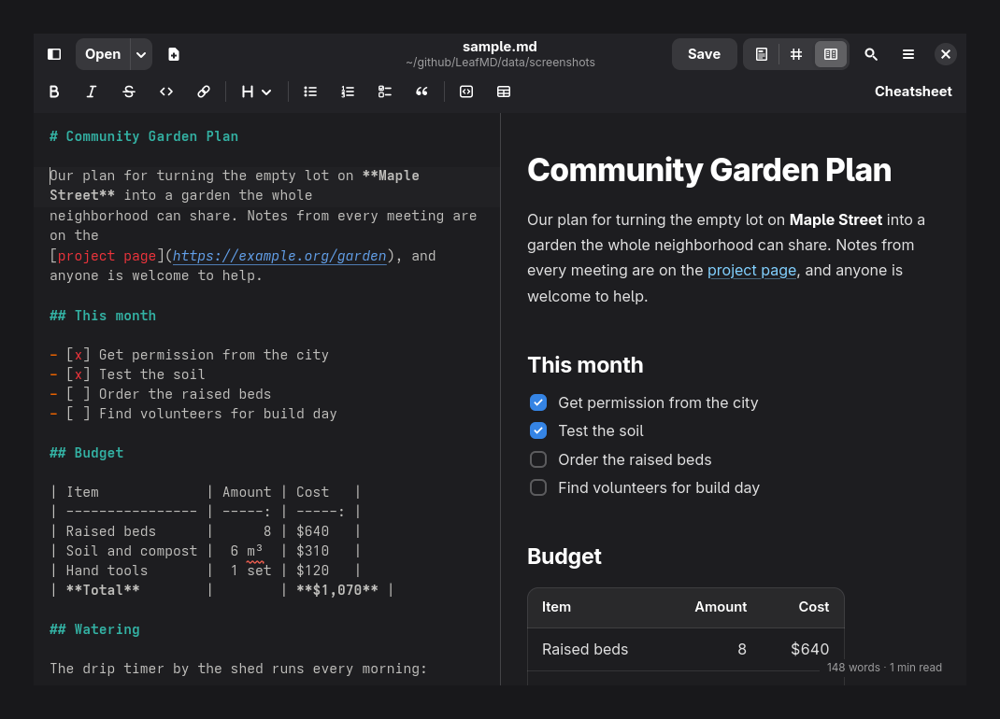
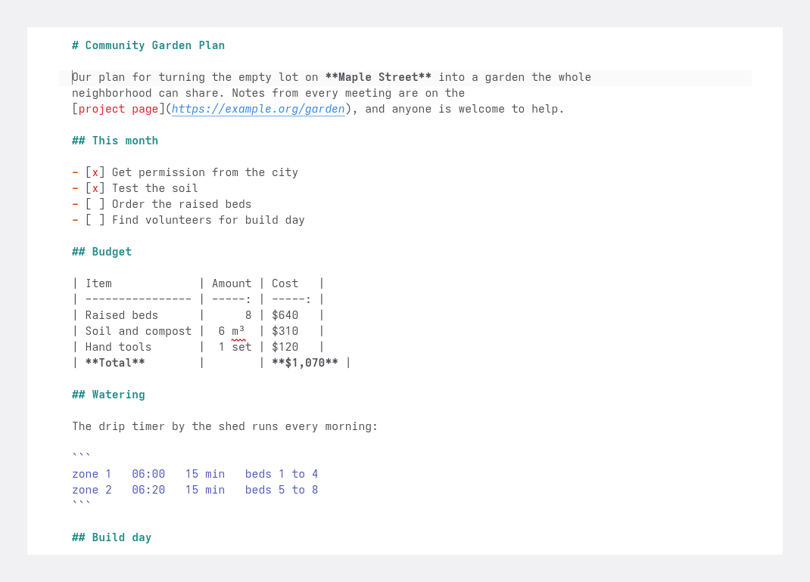

Introducing LeafMD
I write a lot of markdown. Notes, READMEs, docs for my homelab, plans for whatever I'm building next. And for a long time, my options on Linux were either a plain text editor that shows me a wall of asterisks and pound signs, or a full-blown writing app with so many panels and settings that I spent more time configuring it than writing in it. So I built LeafMD, a markdown editor for Linux that's simple on purpose.

Why I Built LeafMD
I wanted something in between. An app that opens a markdown file and just shows it to me, nicely formatted, the way it would look on GitHub. And when I want to change something, I can flip to the raw text, make my edit and save. No plugins, no vaults, no workspace setup, no learning curve.
That became the one rule for LeafMD: every feature should be easy to find and obvious to use. If something needs a tutorial or a pile of settings to make sense, it probably doesn't belong. The goal is for you to focus on your writing instead of learning the app.
Three Ways to Look at a Document
📖 Formatted
The rendered document, full window, just for reading. Tables, checklists, footnotes and code blocks look the way they do on GitHub.

✏️ Raw
The markdown text in a comfortable column down the middle of the window. This is where you type. Nothing is written to the file until you save.

🪟 Split
Raw text on the left, formatted on the right, and the formatted side updates as you type. Scrolling one side scrolls the other to the same spot, and double-clicking a word on the formatted side jumps to that same word in the raw text.
Switching views is one click in the header bar, or Ctrl+1, 2 and 3.
Writing Without Memorizing Markdown
🅱️ Formatting Bar
In Raw and Split view, a row of buttons adds the markdown for you: bold, italic, links, headings, lists, checklists, quotes, code blocks and tables. Select some text and press a button, or press it with nothing selected to format the word or line you're on. Press it again to take the formatting off.
📋 Built-in Cheatsheet
Shift+F1 shows the most common markdown right next to what it looks like. Handy for the stuff you only use twice a year (looking at you, tables).
↩️ Lists That Keep Going
Press Enter in a list and the next bullet, number or checkbox is added for you. Press Enter on an empty item to end the list.
🔗 Paste a Link Over Text
Select some text, paste a web address, and it becomes a proper markdown link.
🖼️ Drop an Image to Link It
Drag an image from your file manager onto the raw text and LeafMD writes the image link for you, with the path worked out from where your document lives.
🔤 Spell Checking
Misspelt words get a red wavy underline as you type, with suggestions on right-click. Code and web addresses are skipped, so your terminal commands don't light up like a Christmas tree.
Getting Around Your Files
🗂️ Tabs and Windows
Open as many documents as you like. Each one gets its own tab with its own view, undo history and find bar. Drag a tab to reorder it, drop it on another window, or pull it out into a window of its own.
🌲 Side Panel
Press F9 for a tree of the folder you're working in, so you can hop between files without going back to the file manager. Its second page lists the document's headings, and clicking one jumps straight there.
🔍 Find and Replace
Ctrl+F to find, Ctrl+H to replace. Replace one match or all of them, and if Replace All goes horribly wrong, one Ctrl+Z puts it all back.
🔁 Picks Up Where You Left Off
LeafMD reopens the files from the window you closed last, and the arrow next to Open lists your recent files. If another app changes a file you have open, a banner asks whether to reload it instead of quietly overwriting anything.
Making It Yours (Without Making It Complicated)
🌗 Light, Dark or Follow System
LeafMD follows your system's light or dark style by default, or you can pin it to one. It also uses the accent color you picked in GNOME Settings.

🔠 Fonts, Margins and Zoom
Preferences has just a handful of options: the style, how wide the text column gets, and the font and size for each view. Ctrl+plus and Ctrl+minus zoom in and out when you just need things bigger for a minute.
🧘 Distraction Free
Ctrl+Shift+D hides everything except your document. Move the pointer to the top or bottom edge and the bars slide back in when you need them.

Sharing What You Wrote
🖨️ Print and Export
Print the formatted document, export it as a PDF, or export it as a single web page that opens in any browser. Pictures from your computer get packed right inside the web page, so it still works after you email it to someone.
🎨 Colored Code Blocks
Code blocks that name their language get syntax colors in the formatted view, in printouts and in exports.
How It Works
- Go to leafmd.app and click Install.
- Open the small file it downloads. Your app store (like GNOME Software) opens with LeafMD ready to install.
- Open any markdown file in LeafMD, from your file manager, by dropping it on the window, or from a terminal with
leafmd notes.mdafter a one-time setup. - Read it formatted, or switch to Raw or Split and start writing.
- Updates show up in your app store like any other app.
Who Is LeafMD For?
- Anyone on Linux who writes notes, docs or READMEs in markdown and wants to see them formatted without opening a browser.
- Developers who want a quick way to read and tidy up project docs.
- People who are new to markdown and would rather click a button than remember the syntax.
- Anyone who has bounced off a "powerful" writing app because it wanted a weekend of setup first.
Get Started
LeafMD needs Linux with Flatpak on an x86_64 computer. On Ubuntu, Flatpak needs a quick one-time setup first, and the instructions are on the site.
- Project site: leafmd.app
- Source & install guide: jeremehancock/LeafMD
LeafMD is still in early days. It works, but expect some rough edges and changes from one version to the next. Bug reports and ideas are very welcome in the GitHub issues, and the roadmap shows what's coming next.
Technical Highlights
- Language: Written in Rust.
- Interface: GTK 4 and libadwaita, so it looks and feels at home on GNOME.
- Editor: GtkSourceView for the raw text, with libspelling for spell checking.
- Formatted view: comrak turns the markdown into HTML, and WebKitGTK draws it. syntect colors the code blocks.
- Safety first: Markdown files can contain web page code, including scripts. LeafMD never runs them. ammonia strips anything unsafe before a document is shown, scripts are switched off in the formatted view too, and links open in your browser instead of inside the app.
- Distribution: Shipped as a Flatpak from LeafMD's own repository at leafmd.app, signed with its own key, so updates can only come from me. It also follows Flathub's packaging rules.
- Tested like a real user: Before each release, an end-to-end test suite runs the installed app on a hidden desktop and clicks through things like saving, tabs, lists and find and replace.
- License: GPL-3.0-or-later.
Support the Project
LeafMD is free and open source, and it always will be. If it saves you from another wall of asterisks, consider buying me a coffee. It helps keep the project going (and keeps me awake long enough to fix the bugs you report).
Buy me a coffee →
AI Disclosure
This project was created with the help of AI.
Links
- GitHub: jeremehancock/LeafMD
- Website: leafmd.app